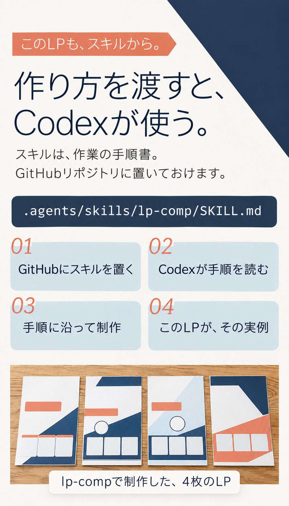
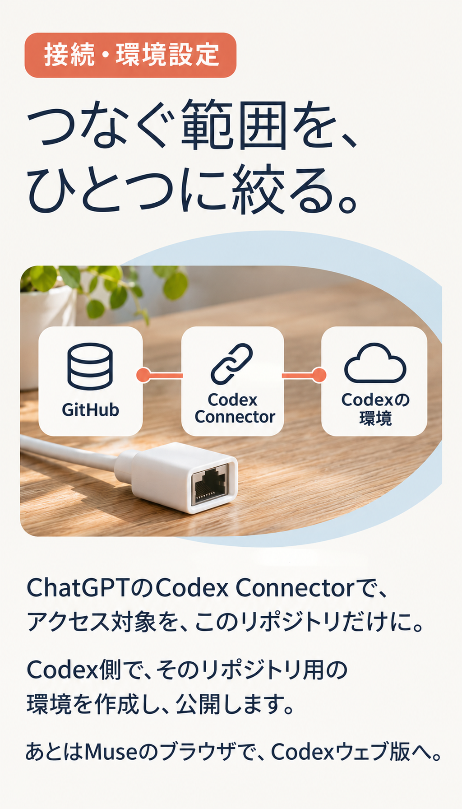
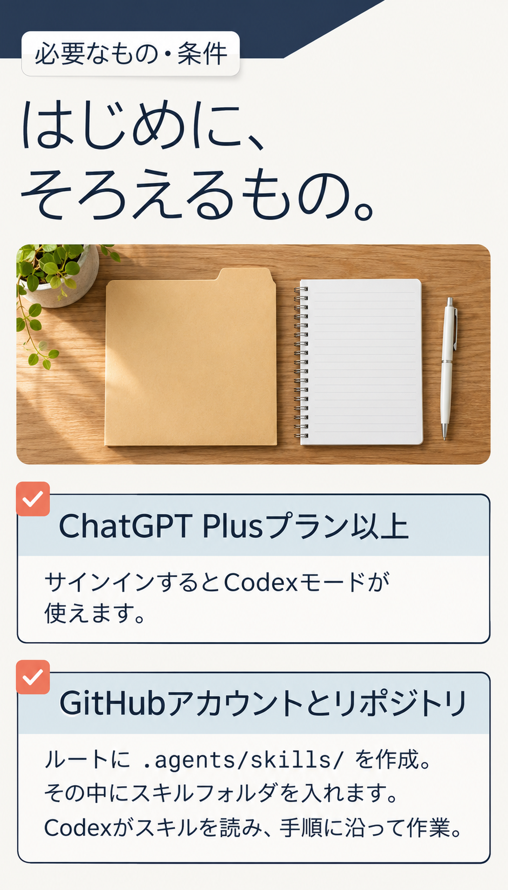
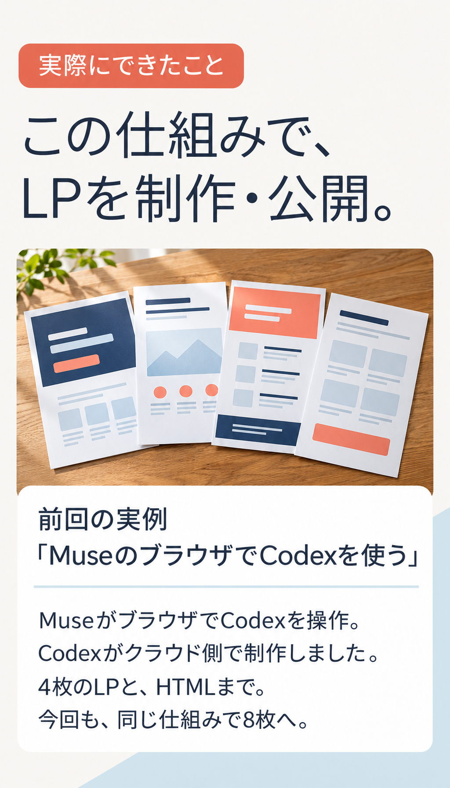
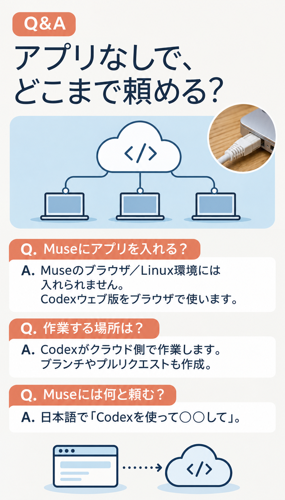
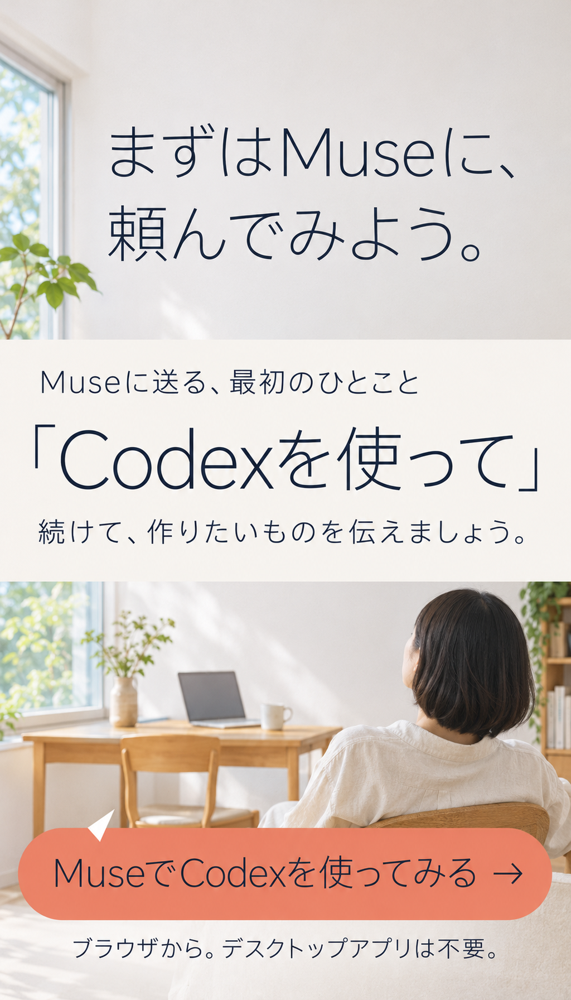

01｜テキストで読む
Codexへの入口は、Museへのひとこと。
MetaのパーソナルAIエージェント、Muse。
ブラウザを操作して、ChatGPTのCodexへ。
作りたいものを、日本語で頼めます。
デスクトップアプリのインストールは不要。

02｜テキストで読む
気になっている。でも、難しそう？
はじめる前の、つまずき。
どこから開く？ Museに、Codexを使いたいと伝える。
アプリの準備は？ デスクトップアプリは不要。
操作を覚える？ ブラウザの操作はMuseに頼める。
あなたは、作りたいものを伝える。まずは、そこから。

03｜テキストで読む
作り方を渡すと、Codexが使う。
このLPも、スキルから。
スキルは、作業の手順書。GitHubリポジトリに置いておけます。
.agents/skills/lp-comp/SKILL.md
GitHubにスキルを置く → Codexが手順を読む → 手順に沿って制作 → このLPが、その実例。
lp-compで制作した、4枚のLP。

04｜テキストで読む
つなぐ範囲を、ひとつに絞る。
接続・環境設定
ChatGPTのCodex Connectorで、アクセス対象を、このリポジトリだけに。
Codex側で、そのリポジトリ用の環境を作成し、公開します。
あとはMuseのブラウザで、Codexウェブ版へ。

05｜テキストで読む
はじめに、そろえるもの。
必要なもの・条件
ChatGPT Plusプラン以上。サインインするとCodexモードが使えます。
GitHubアカウントとリポジトリ。
ルートに .agents/skills/ を作成。その中にスキルフォルダを入れます。
Codexがスキルを読み、手順に沿って作業。

06｜テキストで読む
この仕組みで、LPを制作・公開。
実際にできたこと。前回の実例「MuseのブラウザでCodexを使う」
MuseがブラウザでCodexを操作。Codexがクラウド側で制作しました。
4枚のLPと、HTMLまで。今回も、同じ仕組みで8枚へ。
公開した実例はユーザー提供情報です。写真は説明用イメージです。

07｜テキストで読む
アプリなしで、どこまで頼める？
Q. Museにアプリを入れる？
A. Codexデスクトップアプリは、Museのブラウザ／Linux環境には入れられません。Codexウェブ版をブラウザで使います。
Q. 作業する場所は？
A. Codexがクラウド側で作業します。ブランチやプルリクエストも作成。
Q. Museには何と頼む？
A. 日本語で「Codexを使って◯◯して」。

MuseでCodexを使ってみる（申込URL未設定）08｜テキストで読む
まずはMuseに、頼んでみよう。
Museに送る、最初のひとこと「Codexを使って」
続けて、作りたいものを伝えましょう。
ブラウザから。デスクトップアプリは不要。